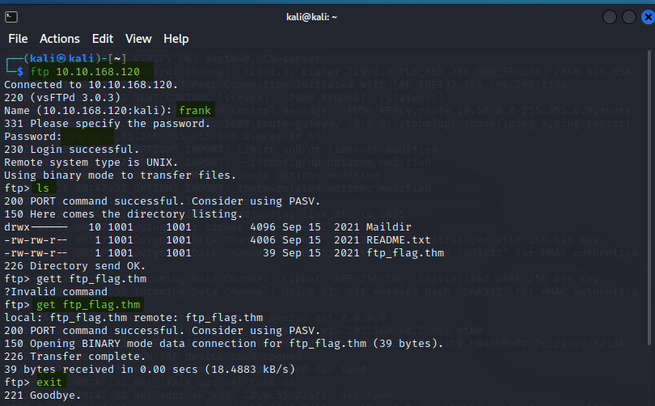

FTP
Contents
FTP¶
FTP, or File Transfer Protocol, is a common method of transferring files on a network. It can be used from a web browser or FTP client. An FTP server listens on port 21 by default and you can even attempt a connection via telnet. It will connect, but as FTP uses port 21 for initial connection only (and transfers files over a different port), the transfer will fail. As you can probably guess by the fact telnet can be used, FTP is unencrypted.
There are 2 modes to FTP
Active: A new connection is made from the Server to the Client on port 20
Passive: A new connection is made from the Client to the Server on a port >1023
Connection Methods¶
Telnet¶
Connecting via telnet uses multiple commands and it cant be used alone. You could probably try hosting a seperate listener but I havent tried this… would be good to do.
telnet [IP] 21
USER [the username]
PASS [the password]
We can then use different commands on the server.
STAT: the server status/current FTP configuration
SYST: the system hosting the FTP server
PASV: set the FTP transfer to Passive
TYPE A: Transfer mode ASCII
TYPE I: Transfer mode Binary
FTP Client¶
The far more useful method is to use an FTP client, Linux has one built int
ftp [IP] [port] (port is optional)
Name: [username]
Password: [the password]
We can then use various commands
ls: list directory
ascii: switch to ASCII mode
get [filename].ext: Download the file
exit: wanna guess?
Below is an example, with my commands highlighted GREEN  It should be noted that the files will be coppied to your PWD, so launch FTP from the correct location or enter a path when you ‘download’